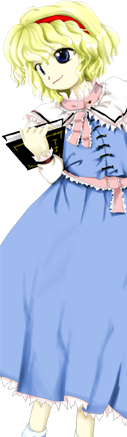
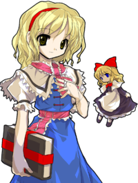
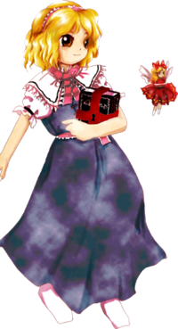
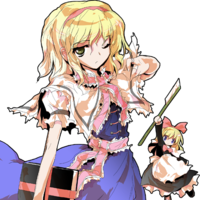

- Welcome to Touhou Wiki!
- Please register to edit. For assistance, check in with our Discord server or IRC channel.
Alice Margatroid
| アリス・マーガトロイド Alice Margatroid (♫) | |
|---|---|
|
Alice Margatroid in Scarlet Weather Rhapsody Seven-Colored PuppeteerMore Character Titles | |
| Species | |
| Abilities |
Magic, Handling dolls |
| Location |
|
Music Themes | |
| |
Appearances | |
| Official Games | |
| |
| Print Works | |
| |
Alice Margatroid (アリス・マーガトロイド Arisu Māgatoroido) is a doll-controlling magician who lives in her home in the Forest of Magic near the home of Marisa Kirisame. According to ZUN's comments in the Music Room of Perfect Cherry Blossom, Alice is kind of a special character in the Touhou Project.
General Information[edit]
Alice made her first ever appearance in the fifth PC-98 Touhou Project game Mystic Square as the third stage boss and the Extra Stage boss. Afterwards, she appeared again as the third stage boss and midboss in the seventh game, Perfect Cherry Blossom, and as a playable character in Imperishable Night, along with being one of Marisa's choosable partners in Subterranean Animism. She was a playable character in Immaterial and Missing Power and Scarlet Weather Rhapsody and was the Final boss of Cirno's scenario in Touhou Hisoutensoku. Additionally, she was a target on Stage 3 of Shoot the Bullet and has made a background appearance in Hopeless Masquerade.
She is a pure all-purpose-type magician youkai who lives in a western-style house in the Forest of Magic without strengths and weaknesses in attributes, but she fundamentally fights in style of manipulating her self-made dolls. She's largely indifferent towards other people and heavily attached to magic. She appears to be strong-willed, but is actually somewhat cowardly.[2]
In Mystic Square, she lived in Makai. Just like in her later appearances, she was portrayed as a doll-using magician. Later on, in the Extra Stage, she comes into possession of a grimoire, which (if it's the same one) she still carries around, albeit sealed. Makai was created by Shinki along with its native residents, but it's unknown if Alice is also one of them.
Species[edit]
In her Imperishable Night profile, she is said to be a magician as a species, in contrast to Marisa, who is a human that practices magic. In Perfect Memento in Strict Sense, she is described as a former human who became a magician recently.[1] It is also said that she still continues human habits like eating and sleeping, despite them not being necessary to her.
In Mystic Square, Alice is implied to already be a youkai, as she refers to Reimu specifically as a "human".
Personality[edit]
According to Perfect Memento in Strict Sense, she has a high understanding of humans, as she used to be one herself. Her threat level is stated as low, while her human friendship level is high. She gladly gives shelter to people lost in the Forest of Magic. She does, however, seem eerie to people who come across her - she isn't very eager for conversation and focuses entirely on magic research, making visitors flee near-immediately.[1][2] She showed her hospitality in Immaterial and Missing Power, when she led Sakuya Izayoi out of the forest,[3] as well as in Strange and Bright Nature Deity, where she let the Three Fairies of Light stay at her house.
She doesn't perform the usual act of attacking humans, but she unexpectedly likes fights and gladly accepts any challenge. She's an indoors type who usually works alone,[4] but in Perfect Memento in Strict Sense, the range of her place of activities is stated to be "any kind of place" in Gensokyo She performs her share of intermingling with the village, appearing in front of people in times of festivals to exhibit her skills with dolls, which are quite well-received. In each ending of Imperishable Night and Immaterial and Missing Power, she participated in banquets at the Hakurei Shrine. Just like Marisa Kirisame, she has an obsession with collecting things, especially magic items. Although this is an area that could be thought of as an area of commonality between them, there has not been a single depiction that would suggest that she had anything stolen from Marisa.
Ability & Strength[edit]
Alice does not find it enjoyable to win battles with overwhelming power and is more interested in strategy, so she usually fights with power that is a little above that of the opponent and always holds back even if it means losing. She does this out of fear that if she were to be defeated using her true strength, she would have nothing to fall back on, which resembles Reimu Hakurei.[5] It is unknown if this is fundamental to her personality, or if this is simply something she judged as an efficient strategy. She generally avoids those stronger than her, as shown in Immaterial and Missing Power.[6][7]
- Handling dolls
Her specialty is manipulating many dolls simultaneously. Due to this, her dexterity is among the finest in Gensokyo.[2] She is able to make her dolls move pretty much in any way humans can, as well as make different dolls perform different actions at the same time, sometimes making them cooperate and sometimes making them move completely asynchronously. Due to this, it looks like she doesn't even manipulate them - for example, Marisa Kirisame commented that "she said that she controls all the dolls herself, but that sounds like a whopper". The dolls can themselves manipulate other dolls, as well. Alice insists on creating new dolls herself rather than letting the already made ones handle the task.[1] She can move the dolls through spoken commands, as shown in chapter 5 of Strange and Bright Nature Deity.
The dolls are shown to be capable of speech - such as in Imperishable Night's Prologue, Strange and Bright Nature Deity or MarisaA's ending in Subterranean Animism. According to her Perfect Memento in Strict Sense article, she hasn't yet succeeded in creating an independent doll, and a conversation between Marisa Kirisame and Rinnosuke Morichika in Curiosities of Lotus Asia chapter 16 suggests that Alice just controls the dolls and pretends they are alive for her own amusement.
According to Bohemian Archive in Japanese Red, her objective is to make a completely autonomous doll that has its own thoughts and moves by its own volition. In Touhou Hisoutensoku, she unleashes a "Semi-Automaton" doll.
However, in her post-battle conversation with Youmu Konpaku, she says that "the strings that attach the body and soul are the same as the ones that control dolls".[8] If this is to be considered, then it could be that Alice controls the dolls with her own spirit. It is not explained if she needs to periodically give them magic power or if they are just fine without, and if they will move even if she does not give them any commands at all. In Touhou Hisoutensoku, Alice did say that "it seems that it's more convenient to control the dolls myself than have dolls that think on their own".
Controlling them aside, she can also make her dolls explode, as shown in various spells.[9][10] In Subterranean Animism, the dolls that she lent to Marisa Kirisame have been prepared with gunpowder.[11] In Magic Sign "Artful Sacrifice" as well as the skills "Volatile Doll", "Doll Cremation" and so on, she is able to put in magic power into the dolls to make them explode. It's unclear what the relation or difference is between the dolls that use gunpowder and the dolls with magic power put into them.
- Illusion perception
It seems that Alice can see through illusions - in Imperishable Night, she figured out Keine Kamishirasawa's true form and saw invisible rays of light coming down from the full moon. She also realized that Fujiwara no Mokou was not actually alive. Whether this is an actual ability of hers or just her being highly perceptive in general is unknown.
Possessions[edit]
- Dolls
Shanghai and Hourai are the two most well-known dolls (or types of doll, rather) used by Alice. The Goliath Doll is another doll created by Alice, which appears to still be in the testing stages and is thought to be her strongest doll.
- Grimoire
Alice always carries around a sealed grimoire. It is very likely to be the same grimoire she uses in Mystic Square's Extra Stage which contains the "ultimate magic". She uses it to cast color-based attacks.[12] Strange and Bright Nature Deity says that Alice has a grimoire "shining with all the seven colors of the light", possibly referring to the same one (albeit she uses only five colors in Mystic Square). When the Three Fairies of Light mention coming into possession of the grimoire, Alice gets angry and nearly attacks them.
Background Information[edit]
Name and Origin[edit]
Her full name is Alice Margatroid (アリス・マーガトロイド). She had no surname in Mystic Square. Her surname, Margatroid, is derived from a real surname, Murgatroyd. The inspiration is most likely Miss Murgatroyd from Agatha Christie's book A Murder is Announced. Murgatroyd is also a nickname for the vampire in Kim Newman's Anno Dracula. On a more interesting note, in the BBC Radio 4 adaptation of the previously mentioned Agatha Christie book, Alice Arnold was responsible for the role of Miss Murgatroyd.
ZUN states that he originally based her off Alice from Megami Tensei and Alice from Asura Blade.[12] Of course, a major inspiration is also the titular protagonist of Lewis Carroll's famous novel Alice's Adventures in Wonderland - the majority of enemies in Mystic Square's Extra Stage are card soldiers of the same type as those in the Walt Disney animated movie version of the novel. The title of the theme used in that stage also directly translates to "Alice in Wonderland".
Design[edit]
Alice was first seen in Mystic Square wearing a pink/white dress with a blue apron, a matching headband with a ribbon on the side, as well as white socks. She has blonde hair and gold eyes like in all of her later appearances (except Perfect Cherry Blossom). Since the Extra Stage, she carries her signature grimoire.
In Perfect Cherry Blossom, she has blue eyes and has a red band in her hair. She wears a light blue dress with long white sleeves and two pink ribbons, one going round her neck and another one around her waist.
In Immaterial and Missing Power, Alice's sprites show her to have blue eyes, but they're gold in her portraits. Her book is wrapped up in a red ribbon, and she has strings on her fingers to control her dolls. She is also seen wearing black boots. Her sprites in Scarlet Weather Rhapsody and Touhou Hisoutensoku were unchanged.
Upon first glance she is said to look like a doll.[1] Her height is stated to be "fairly tall"[13].
Story[edit]
| Attention: This section is a stub and it needs expanding with more information related to the section's topic. If you can add to it in any way, please do so. |

Games[edit]
- Mystic Square
Alice first appeared in Mystic Square. She showed up in the third stage as a young-looking magician with the title "Girl of Death". She confronted the heroine invading Makai (in fact, she was the first boss the heroine met after entering Makai), but was defeated.
She later appeared as "Alice of the Magic Land" in the Extra Stage and fought with five colours: red, blue, purple, green and yellow.
- Perfect Cherry Blossom
In Perfect Cherry Blossom, she did not have any special reason to fight the heorine, and it was only because she was there by chance that she became an opponent.
- Imperishable Night
- Main article: Imperishable Night Story Magic Team Scenario
- Subterranean Animism
- Main article: Subterranean Animism Marisa and Alice Scenario
Spin-offs[edit]
- Immaterial and Missing Power
- Main article: Immaterial and Missing Power Alice's Scenario
- Shoot the Bullet
In Shoot the Bullet, Aya Shameimaru encountered Alice on stage 2 and took photos of her danmaku.
- Scarlet Weather Rhapsody
- Main article: Scarlet Weather Rhapsody Alice's Scenario
- Touhou Hisoutensoku
- Main article: Touhou Hisoutensoku Cirno Arc
In Touhou Hisoutensoku she created a giant doll, called the Goliath Doll. Marisa Kirisame noticed a figure in the Forest of Magic and told Cirno about it. Alice then tested it in a battle against Cirno, who thought the giant doll is Daidarabotchi.
- Main article: Meiling Arc
Alice doesn't actually appear here - it's a pseudo-Alice who was sent by the Giant Catfish to assassinate Hong Meiling in her dreams, but was defeated.
- Hopeless Masquerade
Alice made a background cameo appearance in Hopeless Masquerade on the Human Village stage. She is seen at the far right-hand side of the screen standing around.
Relationships[edit]
Marisa Kirisame[edit]
Marisa Kirisame is a fellow magician of the Forest of Magic. They fought each other in Perfect Cherry Blossom and, presumably, Mystic Square. They were partners in Imperishable Night, and she supported Marisa in Subterranean Animism.
She seems to have a love-hate relationship of sorts with Marisa, with the two often insulting and fighting each other, yet teaming up on several occasions. For all the bickering the two go through, they seem to be close friends, as Alice once recommended Marisa's shop to the Three Fairies of Light when they needed some youkai extermination, and is comfortable enough with Marisa that in Imperishable Night's bad ending, she has no qualms with sleeping over at Marisa's house beside her.
Minor Relationships[edit]
At the end of Mystic Square, Mima takes Alice as her maid, releasing her some time later.
- Three Fairies of Light
In Strange and Bright Nature Deity, she invited the Three Fairies of Light to her home and gave them tea and cake. She got very angry at Sunny Milk for lying about the grimoire, but calmed down.
Alice purchases the Butterfly Dream Pills from Eirin.
Gallery[edit]
Cover of Mystic Square, featuring Alice, her cat and Reimu Hakurei
Alice's sigil in The Grimoire of Marisa.
Illustration of Alice in Bohemian Archive in Japanese Red
Alice in Strange and Bright Nature Deity
Alice artwork from Perfect Cherry Blossom
Alice artwork from Perfect Cherry Blossom
Alice artwork from Immaterial and Missing Power
Alice artwork from Imperishable Night
Alice's different color palettes from Touhou Hisoutensoku. The middle right corresponds to her Immaterial and Missing Power second color palette, while the bottom left corresponds to her Scarlet Weather Rhapsody palette.
Alice's sigil from Touhou Hisoutensoku
Skills[edit]
| Name | Translated | Comments | Games | Usage | ||
|---|---|---|---|---|---|---|
| Total: 15 | ||||||
| 人形操創 | Doll Placement | IaMP SWR |
236A/B/C Default 236B/C | |||
| 人形置操 | Doll Arrangment | IaMP SWR |
214A/B/C Default 214B/C | |||
| 人形無操 | Doll Negation | IaMP SWR |
623A/B Default 623B/C | |||
| 「スペクトルミステリー」 | Spectrum Mystery | IN | Familiar:「上海人形」"Shanghai Doll" | |||
| 人形振起 | Doll Activation | SWR | Default 22B/C | |||
| 人形帰巣 | Returning Dolls | SWR | Alternate 236B/C | |||
| 人形火葬 | Doll Cremation | SWR | Alternate 623B/C | |||
| 人形千槍 | Thousand Spear Dolls | SWR | Alternate 214B/C | |||
| 人形ＳＰ | SP Doll | SWR | Alternate 22B/C | |||
| 大江戸爆薬からくり人形 | Ooedo Explosive Marionette | SWR | Alternate 623B/C | |||
| シーカーワイヤー | Seeker Wire | SWR | Alternate 22B/C | |||
| 「レインボーワイヤー」 | "Rainbow Wire" | Used remotely by Marisa | SA | Shot | ||
| 「リモートサクリファイス」 | "Remote Sacrifice" | Used remotely by Marisa | SA | Bomb | ||
| 人形伏兵 | Doll Ambush | Soku | Alternate 236B/C | |||
| 人形弓兵 | Doll Archers | Soku | Alternate 214B/C | |||
Spell Cards[edit]
| Name | Translated | Comments | Games | Stage | ||
|---|---|---|---|---|---|---|
| Total: 37 | ||||||
| 操符「乙女文楽」 | Puppeteer Sign "Maiden's Bunraku" | PCB | St. 3: H/L | |||
| 蒼符「博愛の仏蘭西人形」 | Blue Sign "Fraternal French Dolls" | PCB GoM |
St. 3: E/N/H -- | |||
| 蒼符「博愛のオルレアン人形」 | Blue Sign "Fraternal Orléans Dolls" | PCB | St. 3: L | |||
| 紅符「紅毛の和蘭人形」 | Scarlet Sign "Red-Haired Dutch Dolls" | PCB | St. 3: E/N | |||
| 白符「白亜の露西亜人形」 | White Sign "Chalk-White Russian Dolls" | PCB | St. 3: H/L | |||
| 闇符「霧の倫敦人形」 | Darkness Sign "Foggy London Dolls" | PCB GoM |
St. 3: E/N -- | |||
| 廻符「輪廻の西蔵人形」 | Cycle Sign "Samsaric Tibetan Dolls" | PCB | St. 3: H | |||
| 雅符「春の京人形」 | Elegant Sign "Spring Kyoto Dolls" | PCB | St. 3: L | |||
| 咒詛「魔彩光の上海人形」 | Malediction "Magically Luminous Shanghai Dolls" | PCB | St. 3: E/N/H | |||
| 咒詛「首吊り蓬莱人形」 | Malediction "Hanged Hourai Dolls" | PCB | St. 3: L | |||
| 魔符「アーティフルサクリファイス」 | Magic Sign "Artful Sacrifice" | IaMP IN SWR |
Use Use Use | |||
| 魔操「リターンイナニメトネス」 | Magipulation "Return Inanimateness" | IaMP IN SWR GoM |
Use Use Use -- | |||
| 戦符「リトルレギオン」 | War Sign "Little Legion" | IaMP SWR |
Use Use | |||
| 戦操「ドールズウォー」 | War Command "Dolls' War" | IaMP SWR |
Use Use | |||
| 咒符「上海人形」 | Curse Sign "Shanghai Doll" | IaMP SWR |
Use Use | |||
| 咒詛「蓬莱人形」 | Malediction "Hourai Doll" | IaMP SWR |
Use Use | |||
| 符の壱「アーティフルチャンター」 | First Card "Artful Chanter" | IaMP | Story | |||
| 符の弐「ドールクルセイダー」 | Second Card "Doll Crusader" | IaMP | Story | |||
| 魔光「デヴィリーライトレイ」 | Evil Light "Devilry Light Ray" | IaMP | Story | |||
| 「グランギニョル座の怪人」 | "The Phantom of the Grand Guignol" | IN GoM |
LW -- | |||
| 操符「ドールズインシー」 | Puppeteer Sign "Dolls in Sea" | StB | St. 3 | |||
| 呪符「ストロードールカミカゼ」 | Curse Sign "Straw Doll Kamikaze" | StB GoM |
St. 3 -- | |||
| 赤符「ドールミラセティ」 | Red Sign "Doll Mira Ceti" | StB GoM |
St. 3 -- | |||
| 偵符 「シーカードールズ」 | Spy Sign "Seeker Dolls" | SWR | Use | |||
| 紅符 「和蘭人形」 | Scarlet Sign "Holland Doll" | SWR | Use | |||
| 人形 「未来文楽」 | Doll "Futuristic Bunraku" | SWR | Use | |||
| 注力 「トリップワイヤー」 | Focus Power "Trip Wire" | SWR | Use | |||
| 足軽「スーサイドスクワッド」 | Foot Soldiers "Suicide Squad" | SWR | Story | |||
| 剣符「ソルジャーオブクロス」 | Sword Sign "Soldier of Cross" | SWR | Story | |||
| 人形「魂のないフォークダンス」 | Dolls "Soulless Folk Dance" | SWR | Story | |||
| 槍符「キューティー大千槍」 | Lance Sign "Cutie Phalanx" | Soku | Use | |||
| 人形「レミングスパレード」 | Dolls "Lemmings' Parade" | Soku | Use | |||
| 人形「セミオートマトン」 | Doll "Semi-Automaton" | Soku | Story | |||
| 騎士「ドールオブラウンドテーブル」 | Knight "Doll of Round Table" | Soku | Story | |||
| 犠牲「スーサイドパクト」 | Sacrifice "Suicide Pact" | Soku | Story | |||
| 試験中「レベルティターニア」 | Testing "Level Titania" | Soku | Story | |||
| 試験中「ゴリアテ人形」 | Testing "Goliath Doll" | Soku | Story | |||
Additional Information[edit]
- Alice appeared on the cover of Mystic Square with a cat.
- Alice appeared in the Music Room background of Perfect Cherry Blossom.
- Being known as the "Seven-Colored Puppeteer" or "Rainbow Puppeteer", Alice apparently believes in a correlation between color and power level. During her dialogue with Reimu Hakurei in Perfect Cherry Blossom, she asserts Reimu's powers are only equal to 28.5714% (or 2/7) of her own powers, due to Reimu's outfit only consisting of two colors. This appears to be a recurring theme in Perfect Cherry Blossom, as Yukari Yakumo, Ran Yakumo and Chen are all named after colors and have relative power levels equivalent to their colors' place on the visual spectrum. This, however, has not been referenced in recent games.
- Alice's alternate palette from Scarlet Weather Rhapsody resembles Hina-Ichigo, a doll from the manga series Rozen Maiden. In Touhou Hisoutensoku, she has palettes resembling the other Rozen Maiden dolls: Suiseiseki, Souseiseki, Suigintou, Shinku, Kanaria, and Kirakishou. Add the fact that, in Rozen Maiden, the aforementioned dolls are battling for the title of "Alice", the perfect doll.
- Alice is one of the two characters in the whole series who appears 3 times in a single stage: Twice as a midboss and the third as the actual boss of stage 3 in Perfect Cherry Blossom. The other is Seiran in Legacy of Lunatic Kingdom.
- Alice is one of the four characters in the whole series who appears as a boss two times in different stages of the same game - as the third and extra boss in Mystic Square. The others are Rika in Story of Eastern Wonderland, Yuuka Kazami in Lotus Land Story and Junko in Legacy of Lunatic Kingdom.
- Alice has been a recurring customer of Eirin's, coming to see her to buy a medicine called the Butterfly Dream Pill.[14]
- Yuki and Mai's second attack in Samidare looks very similar to Alice's second attack in the Extra Stage of Mystic Square.
Fandom[edit]
Official Profiles[edit]
|  | ○七色の人形使い アリス・マーガトロイド ３面のボス、わりと普通の魔法使い。 とりあえず万能の魔法使いであり、これといって属性に得手不得手は アリスも蒐集家であり、本等のマジックアイテムを収集する癖がある。 霊夢達と戦う明示的な理由は無い。そこに居たから魔法の相手になっ 全力で戦って負けると、本当に後が無い為である。 ここらへんの性格は霊夢に似ている。 |
*Seven-Colored Puppeteer Alice Margatroid The stage 3 boss, kinda ordinary magician. She is a versatile magician, that has no specific strong or weak point in any area. If you ask me, she is similar to Marisa, or rather I'd say a youkai version of Marisa. Alice has an obsession with collecting things as well, and has the habit of collecting magic items, especially magic books. As they both share the same hobby, she often clashes with Marisa so their relation is like loggerheads. Most recently, she is interested in collecting dolls that have a story associated with them. She had no evident reason to attack Reimu and company. They were chosen for the target of her magic because they were there. Dominating the enemy with overwhelming power is not fun at all for Alice, so she always sees her opponent's reaction and tries to fight with power that exceeds the opponent by a hair. Even if she loses, she doesn't show her full power. That's because she thinks it would be the end of the rope for her if she lost with full power. In this aspect, her personality is somewhat similar to Reimu. |
|  | ○七色の人形遣い アリス・マーガトロイド 種族：魔法使い 生粋の魔法使いさん。見た目は人間と殆ど同じだが、人間ではない。 彼女の家には所狭しと大量の人形が置かれている。その不気味さは、たまに迷い込む人間を恐怖に陥れる。不気味な森の中にある、余りにも異質な人形の家。それは、森がいくら不気味だとしても逃げ出したくなるのも当然の事だ。 性格は、他人に無関心で、魔法に執着しやすい。強気を張っているが実は臆病な面もある。 体術は至って普通。体を動かすのも魔法も使うのも人並みである。器用さはかなり高く、大量の人形をあたかも生きているかのように操る事が出来る。その器用さは幻想郷の中でもピカイチである。 |
*Seven-Colored Puppeteer Alice Margatroid Species: Magician A pure magician. While her appearance is almost identical to humans, she is not one. She is a kind of so called humanoid youkai. Her house is crammed with a lot of dolls. The sight is so spooky that it scares rare visitors away. The house of dolls is strangest even in the forest of the bizarre. It's no wonder that they tend to run away from there. Her personality is indifferent to others, and is easily attached to magic. She puts on a confident attitude, but she actually also has a timid side. She is quite average in melee fighting. Both her body movement and magic using are average. Instead of that she has very high skillfulness, which enables her to control many dolls as if they're living beings. This skillfulness is among the finest among all of Gensokyo. |
|  | ○七色の人形遣い アリス・マーガトロイド
魔法の森に住む魔法使い。 魔法を操る程度の能力を持つ。人形を遣うのも魔法の一種である。 基本的に自分から出かける事は少ないが、今回はしぶしぶ。 魔法の森に住み、魔法使いで収集家、と魔理沙と共通点が多いが、魔理沙は人間、アリスは魔法使いという決定的な違いがある。 ちなみに、魔法の森に生えるきのこを好んで使う、使わない、の違いもある。 もちろんアリスは使わない方。だからという訳では無いが、二人は仲が悪い。 武器は魔法。魔法使いの魔法は常に術者オリジナル。
今回は魔理沙と組む。 高速移動は単独使用時のみの性能 レーザーは貫通するのと出っ放しな 撃っているのは人形だが。 せっかくだから速攻で、と言う人に。 |
*Seven-Colored Puppeteer, Alice Margatroid
A magician living in the Forest of Magic. She possess the ability to use magic. Puppetry is a type of magic too. She rarely goes out by herself, but she had no other choice this time. She has many similarities to Marisa, namely living in the Forest of Magic, being a magician and having an obsession with collecting things. However, they have an absolute difference in that Alice is a magician as a species while Marisa is a human magician. Other than that, they're also different in using forest's mushroom as preference or not. Of course, Alice is the one not using them. However, it is not because of such matter that makes both on bad terms. Magic is her weapon. A magician's magic is always originally developed by the magician.
|
| ○七色の人形遣い アリス・マーガトロイド 種族：魔法使い 魔法の森に住む魔法使い。 魔法使いという言葉のイメージ通り、インドア派である。基本的には一人でいる事が多い。魔法の森には人間が余り来ないので、非常に快適である。ただ、森は嫌な湿度が高く、人形の手入れをしないとすぐに痛んでしまう。その為、人形の手入れを自動で行う人形を作ろうと思っている。 |
Seven-Colored Puppeteer
Species: Magician A magician living in the Forest of Magic. The greatest difference between Alice and Marisa is that Marisa is a human of magician occupation whereas Alice is a magician as a species. You might imagine magicians as being indoor-type people; in Alice's case, you'd be right. She spends most of her time alone, and the forest is a good place for that. The forest is quite humid, however, and her dolls will become damaged without her constant care. Because of this, she's currently planning to make a doll that will automatically take care of other dolls. |
|  | ○七色の人形遣い アリス・マーガトロイド 種族：魔法使い |
Seven-Colored Puppeteer Alice Margatroid Race: Magician |
| ○七色の人形遣い アリス・マーガトロイド 種族：魔法使い 森に住んでいる人形遣い。 間欠泉から不穏な空気を感じたが、妖怪が地底に行く事は憚れていたのでどうしようか悩んでいた。 |
Seven-Colored Puppeteer
Species: magician A puppeteer that lives in the forest. She felt something odd about the geyser that erupted, but since youkai prefer not to go underground she worried over what to do. That's when she noticed that Marisa was especially interested in the geyser, so she convinced Marisa to investigate the underground for her. She told her that investigating the hot spring would be a fun game, and pointed her towards the source of the geyser. She also made her carry dolls that had Yukari's remote control devices in them. |
Official Sources[edit]
- 1998/12/03 Mystic Square - Stage 3 dialogue; Extra Stage dialogue; Extra Stage endings
- 2003/08/17 Perfect Cherry Blossom - Character Settings.txt (official profile); Stage 3 dialogue
- 2004/08/15 Imperishable Night - Character Settings.txt (official profile); Marisa and Alice's scenario and Extra Stage dialogue
- 2004/12/30 Immaterial and Missing Power - Shanghai Alice Correspondence.txt (official profile); Alice's scenario; Alice's Vs. mode dialogue
- 2005/08/11 Bohemian Archive in Japanese Red - Article and Interview: Alice
- 2005/12/30 Shoot the Bullet - Stage 3 spell card comments
- 2006/12/27 Perfect Memento in Strict Sense - Seven-Colored Puppeteer: Alice Margatroid
- 2007/01/26 ~ 2007/02/26, 2007/05/26 Strange and Bright Nature Deity - Chapters 5-6, 9
- 2008/05/25 Scarlet Weather Rhapsody - chara.html (official profile); Alice's scenario; Alice's Vs. mode dialogue
- 2008/08/16 Subterranean Animism - Character Settings.txt (official profile); Marisa and Alice's scenario and Extra Stage dialogue
- 2008/09/22 Inaba of the Moon and Inaba of the Earth - Chapter 16
- 2009/07/28 The Grimoire of Marisa - Alice Margatroid's Spell Cards
- 2009/08/15 Touhou Hisoutensoku - Cirno's scenario; various stage dialogue
- 2009/12/22 Inaba of the Moon and Inaba of the Earth - Chapter 30
- 2010/11/25 Wild and Horned Hermit - Chapter 3
- 2010/12/25 Oriental Sacred Place - Chapter 12
References[edit]
- ↑ 1.0 1.1 1.2 1.3 1.4 Perfect Memento in Strict Sense: Alice Margatroid
- ↑ 2.0 2.1 2.2 Immaterial and Missing Power/Afterword - character profile
- ↑ Immaterial and Missing Power - Sakuya's Scenario
- ↑ Imperishable Night: キャラ設定.txt
- ↑ Perfect Cherry Blossom - Character Settings.txt
- ↑ Immaterial and Missing Power/Story/Alice's Scenario#Stage 3
- ↑ Immaterial and Missing Power/Story/Suika's Scenario#Stage 2
- ↑ Scarlet Weather Rhapsody/Story/Alice's Script#Alice wins Youmu
- ↑ The Grimoire of Marisa/Alice Margatroid's Spell Cards
- ↑ Scarlet Weather Rhapsody/Spell Cards/Alice Margatroid
- ↑ Subterranean Animism/Story/Marisa and Alice's Scenario#Stage 5
- ↑ 12.0 12.1 Mystic Square/Translation/Other - omake.txt
- ↑ ZUN's E-mails
- ↑ Bohemian Archive in Japanese Red: Eirin Yagokoro
| This page is part of Project Characters, a Touhou Wiki project that aims to write proper descriptions for all official characters of Touhou Project. Please keep the character page guidelines in mind when contributing. |